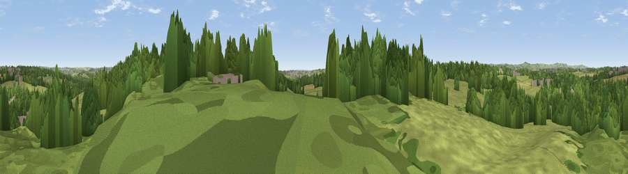

Viewpoint near Codnor
#38661 in England · top 74% of its area beats it · near CodnorThe view, rendered

A 360° render of this exact spot computed from the terrain model, tree cover and land cover — summer colours, afternoon light, calibrated against photographs of famous viewpoints. Real trees, hedges and buildings will differ in detail.
The panorama
Grey silhouette: terrain skyline in each direction (720 bearings, Earth curvature and refraction included). Dashed green: skyline with trees (+15 m) and buildings (+8 m) as obstacles. Blue strip: how far the ground is visible on each bearing.
Where the view opens
Wedge length = distance to the farthest visible ground on that bearing (vegetation-aware). Rings at 10, 25 and 50 km.
What fills the view
46% woodland · 44% grassland · 6% built-up · 4% cropland
Angular shares of the visible panorama (visual magnitude), not map area. Landscape diversity 0.44 (0–1 Shannon).
Key numbers
More beautiful places nearby
The staircase of upgrades: each row has a higher view potential than everything closer. Driving times are estimates from straight-line distance, calibrated against real road routing — check an actual route before setting out.
| Place | Direction | Drive | Score |
|---|---|---|---|
| Viewpoint near Codnor Park | E · 1 km | ~3 min | 45.1 |
| Bessalone | W · 7 km | ~14 min | 51.7 |
| Viewpoint near Boothgate | WSW · 7 km | ~14 min | 59.4 |
| The Tors | WNW · 8 km | ~16 min | 68.9 |
| Crich Stand | WNW · 9 km | ~18 min | 73.0 |
| Alport Height | W · 12 km | ~22 min | 73.9 |
| Tissington Hill | W · 27 km | ~43 min | 75.5 |
| Viewpoint near Woodhouse Eaves | SSE · 37 km | ~56 min | 77.7 |
53.05167, -1.37078 · source: screening · position refined by local search. Computed location — check access rights before visiting.